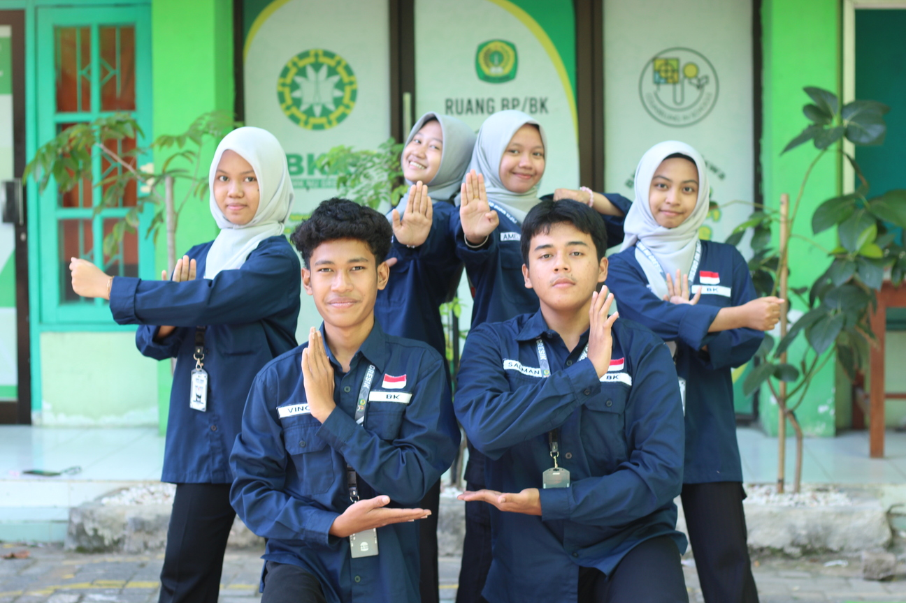
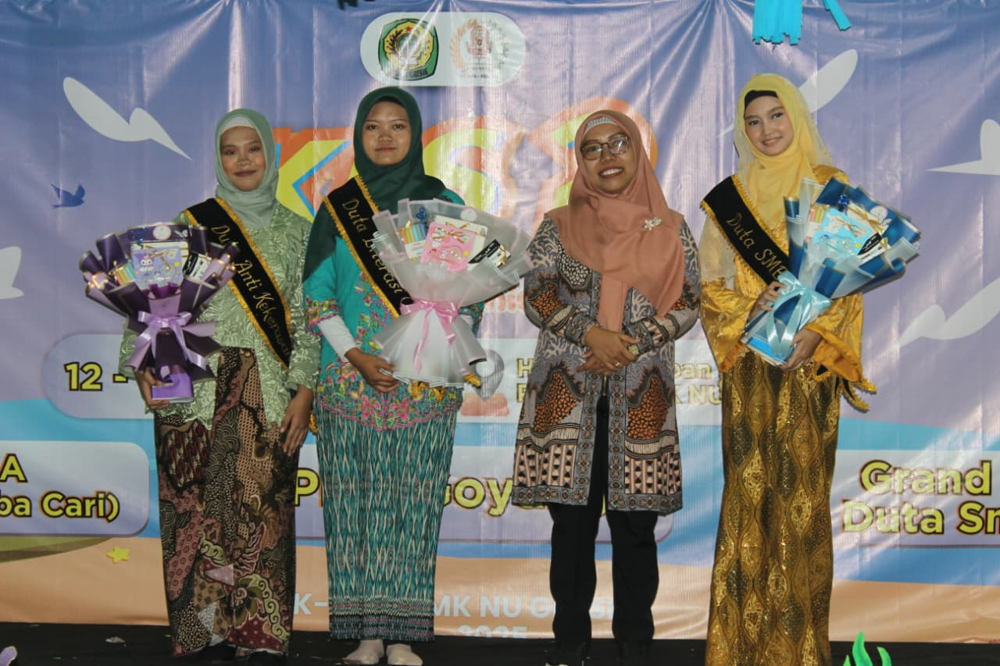
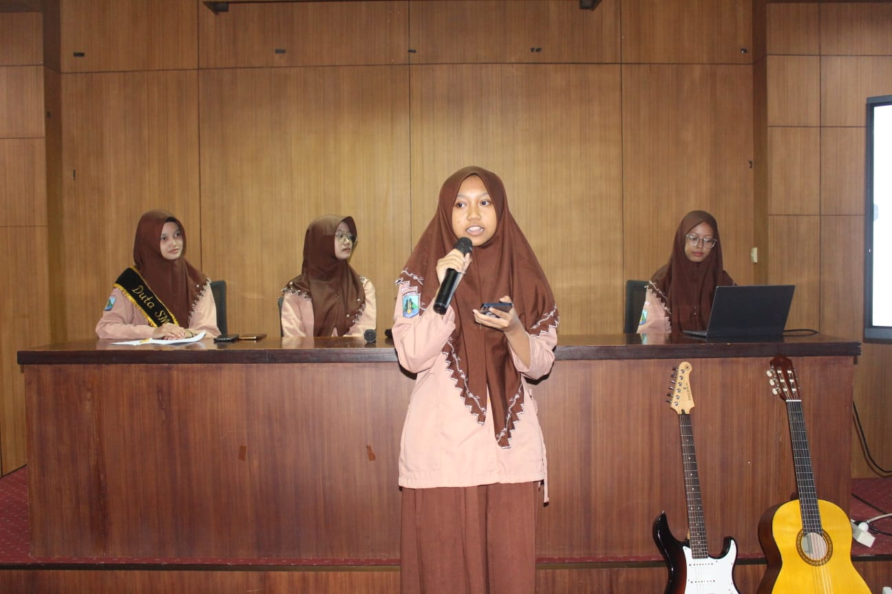
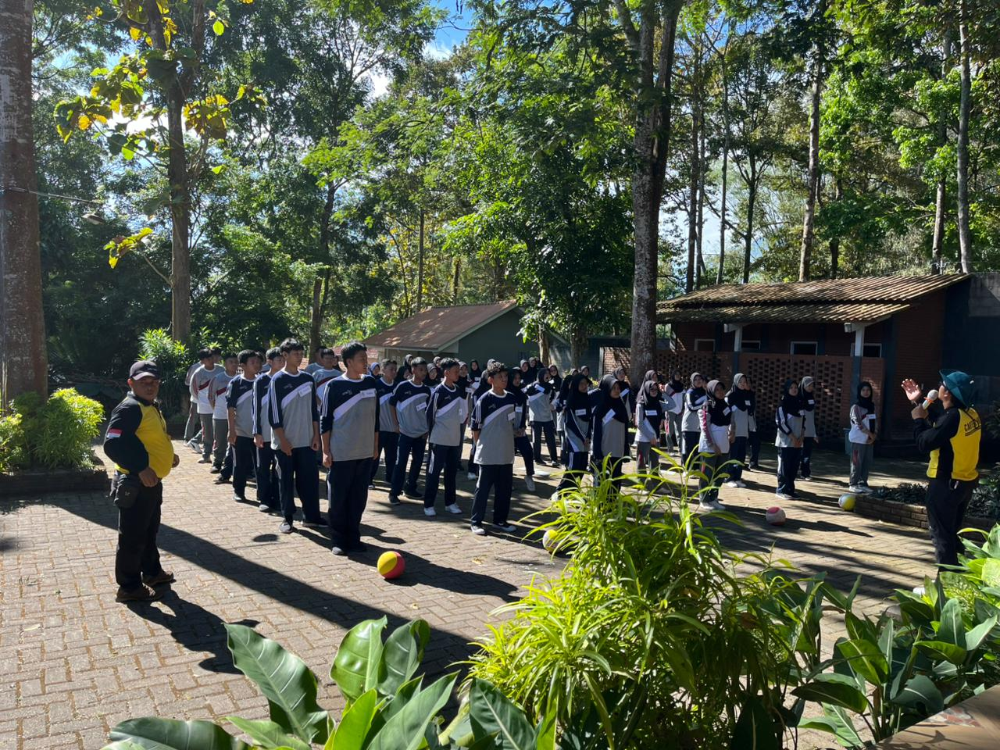

Zidni Mamluatul M., S.S., S.Pd, Gr.
Pembina Sekbid BK & KJ



Pengertian dari sekbid BK yaitu Berorganisasi Kepemimpinan, Kepemimpinan dalam organisasi adalah sebuah proses dimana seorang pemimpin memengaruhi dan memberikan contoh kepada pengikutnya dalam upaya mencapai tujuan organisasi. Program Kerja sekbid BK diantara nya adalah Pemilihan Duta SMECTRA, RELAGSASI (Review Lagu dan Seminar Literasi), MPLS dan Recruitment.

Pemilihan DUSMECT (Duta Smectra) Adalah kegiatan yang dilaksanakan setelah Ujian Akhir Semester Genap dan akan memunculkan 3 duta, yakni Duta Literasi, Duta Anti Kekerasan, dan Duta SMECTRA yang merupakan duta inti. Pemilihan duta Smectra dilakukan dengan mengadakan tes tulis tentang seberapa jauh mengenal sekolah dan juga melakukan tes public speaking.

RELAGSASI merupakan program kerja yang dilaksanakan oleh Seksi Bidang BK dan duta literasi SMK NU Gresik. kegiatan ini merupakan kegiatan review lagu dan seminar literasi, yang diikuti oleh masing-masing perwakilan kelas.

Recruitment merupakan program kerja Sekbid BK setiap tahunnya yang dilaksanakan setiap bulan Agustus untuk mengajak, memilah dan memilih calon anggota MPK-OSIS yang layak. Adapun serangkaian tes yang dilakukan meliputi tes ngaji, tes tulis, tes public speaking dan tes kepemimpinan. Melalui tes ini, mental dan diri calon akan diuji seberapa layak menjadi anggota MPK-OSIS Gresik.

MPLS merupakan kegiatan yang dilaksanakan untuk peserta didik baru. Pada dasarnya, kegiatan MPLS merupakan program kerja dari sekbid BK (Berorganisasi Kepemimpinan) namun terdapat sebuah perubahan pada tahun 2026, kegiatan MPLS ini dibantu oleh BPH. Kegiatan ini akan dilakukan dalam waktu 5 hari dengan kegiatan berbeda disetiap hari nya, dari kegiatan pengenalan lingkungan sekolah, materi pembelajaran di sekolah, permainan outdoor yang disediakan oleh panitia, expo ekstrakulikuler, dan penampilan pentas seni dari setiap kelompok.